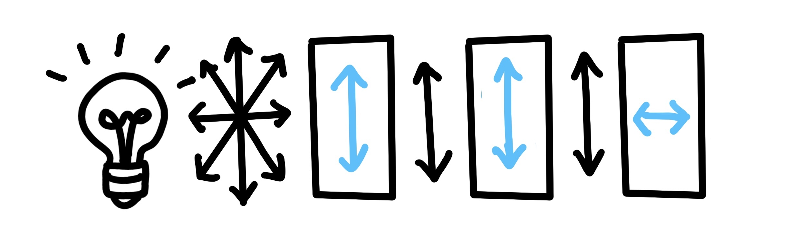
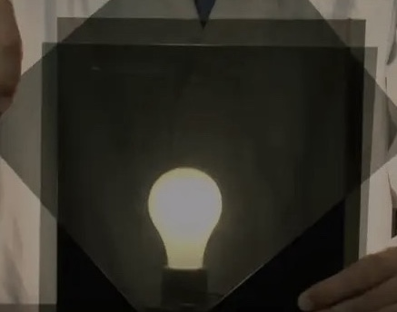

Interactive Learning
This section describes the hands-on learning process students experience while working with Kernel Quest.

A hands-on, interactive activity that teaches students how CNNs use kernels to "scan" images and detect visual features, like the wheels of a car.
Students simulate a CNN by sliding the plastic “kernel” between polarizer film sheets, revealing parts of a cartoon monster, noting observed features (e.g., eyes, wings) to guess the monster's identity.
Prototype Design Goal: a physical setup where the viewer can move a small viewport freely over a large picture, revealing only the portion of the picture directly under the viewport while the rest remains hidden.
2 polarizers with perpendicular transmission axes
No light pass through
3 polarizers with perpendicular transmission axes
No light pass through
Rotate polarizer in the middle…
We can see now!


Description of the images and video, illustrating the final stages of Kernel Quest.
The student reads the story guide out loud at the beginning at the activity to introduce the task. The story guide is designed to be fun, engaging and educational, blending AI concepts with storytelling.


This section describes the hands-on learning process students experience while working with Kernel Quest.


This is a description of the two images shown above, illustrating different stages of the Kernel Quest process.